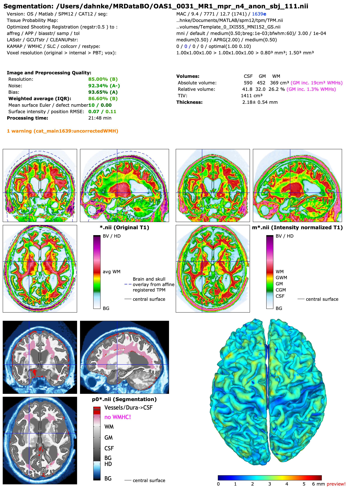
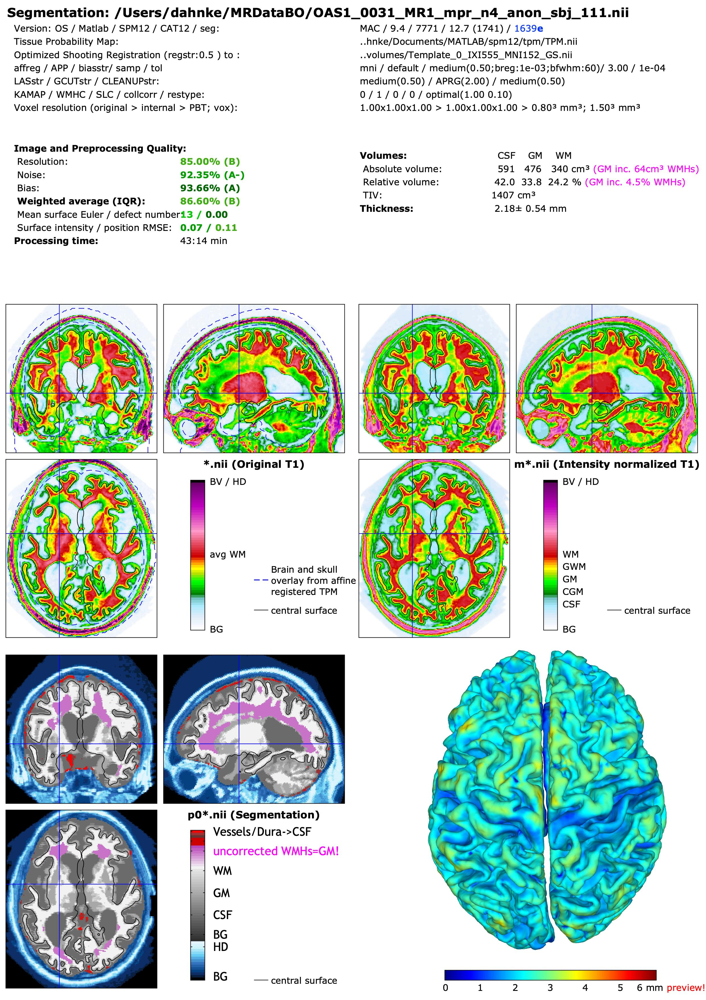

White Matter Hyperintensity Correction:
The AMAP Segmentation of CAT is less dependent on the prior information and therefore quite sensitive to intensity changes such as white matter hyperintensities (WMHs) and small vessel disease (SVD). Especially large WMHs can cause major problems in the non-linear registration and surface reconstruction of CAT. We have therefore developed a method to detect and handle white matter abnormalities (Dahnke et al., 2019). Although WMHs and SVDs differ in many aspects, both represent intensity changes of the WM and are thus treated similarly here. The correction type defines how detected voxels are treated: as GM (WMHC=0), as WM (but only for registration and surface processing) and as GM in the segmentation (WMHC=1, default), as WM (WMHC=2), or as separate class (WMHC=3). This also affects the global, regional, and local tissue volumes in the segmentation maps, the regional csv-tables in the label directory, and the global values in the cat_*.xml and catreport* in the report directory (see example of subject 31 of the OASIS dataset in Fig. 1).
In case of correction, the estimated WMH volumes can be found in the subjectmeasures.vol_[abs|rel]_WMH fields in the cat_*.xml files, whereas the tissue values of the subjectmeasures.vol_[abs|rel]_CGW fields change analogously to the values in the segmentation maps and label files (i.e., with the default setting WMHC=1, they are treated as GM). Although this correction is quite conservative (underestimation WMHs to avoid overestimation) only a temporary correction is used by default to avoid serious problems in dependent routines, with smaller uncorrected WMHs generally being statistical outliers and not interfering with analyses. However, in severe aging and diseases, WMHs can be found as GM increase in WM regions, e.g., near the ventricles.


Fig. 1: CAT result reports for the four different WMHC settings (default setting with fast preview surfaces). Without correction, the surface reconstruction is also applied in larger (ventricular) WMHs that cause severe topological defects. The detected WMHs were quantified and visualized by violet-pink font/label color in the tissue table and the label map.
References:
- Dahnke, R., Ziegler, G., and Gaser, C. (2019). Detection of White Matter Hyperintensities in T1 without FLAIR. Presented at the Human Brain Mapping Conference, Rome. DOI: 10.13140/RG.2.2.26753.20326